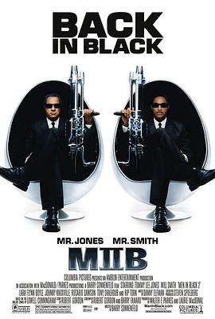

黑衣人2 / Men in Black II
又名：MIB星际战警2(台) / 黑超特警组2(港) / 黑超特警2 / MIB II
作品信息
| 导演 | 巴里·索南菲尔德 |
| 编剧 | 劳威尔·坎宁安 / 罗伯特·戈登 / 巴里·法纳罗 |
| 主演 | 威尔·史密斯 / 汤米·李·琼斯 / 约翰尼·诺克斯维尔 / 罗莎里奥·道森 / 雷普·汤恩 / 拉腊·弗林·鲍尔 / 帕特里克·沃伯顿 / 迈克尔·杰克逊 |
| 类型 | 喜剧 / 动作 / 科幻 |
| 制片国家/地区 | 美国 |
| 语言 | 英语 |
| 上映日期 | 2002-07-03 |
| 片长 | 88 分钟 |
| IMDb | tt0120912 |
最后一次看到是 2026-10-07T23:14:40+08:00 · 豆瓣原页